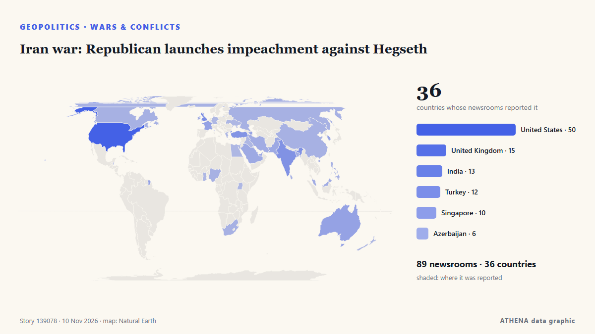

Iran war: Republican launches impeachment against Hegseth

WASHINGTON, Nov 4: US President Donald Trump has been asking advisers whether Defense Secretary Pete Hegseth should remain in his position following the Republicans’ sweeping losse... de Arab Times
Relayé de façon indépendante par 91 médias dans 37 pays depuis le 4 nov. ; premier à l'annoncer : Breaking Belize News ; la couverture est à son pic. ATHENA juge le risque élevé (7.7/10), surtout en raison de la gravité des dommages décrits et de sa portée géographique et sectorielle. La confiance est de 92 % (élevée) : 91 médias indépendants le confirment, avec une fiabilité moyenne des sources de 74 %. Médias par pays : États-Unis (5), Royaume-Uni (4), Turquie (4). Couverture : du 4 nov. au 5 nov., 32 heures.
Pourquoi c'est important: Les évolutions de sécurité et de diplomatie peuvent déplacer alliances, échanges et marchés bien au-delà des pays directement concernés.
Ce qui a changé : 91 nouveaux articles de 63 rédactions dans les 24 heures jusqu'au 10 nov..
Premier titre : Pete Hegseth is now a problem Trump can’t bring himself to solve
Les titres sont affichés en anglais, tels que publiés.
Comment lire cette page
- Ce que vous lisez
- 91 médias dans 37 pays ont rapporté cet événement. Les reportages ci-dessous sont classés selon leur ordre de parution ; chaque titre ouvre l'article original. ATHENA n'écrit aucun reportage.
- Notre lecture
- Sous surveillance — Les reportages décrivent une action, ou une décision encore à prendre, entre des États ou des groupes armés. ATHENA suit la suite des événements. Nous guettons quatre types d'évolution : rien de plus, une action ouverte et revendiquée, une action menée par des tiers ou sans revendication, et un accident ou un malentendu. Nous ne prédisons pas lequel se produira.
- Quelle base de preuves
- Solide De nombreux médias indépendants, dans de nombreux pays, décrivent le même événement.
Après retrait des doublons, des éléments hors sujet et périmés, 24 des 40 reportages listés sont retenus ; 88 % des titres correspondent à l'événement.
- Ce que cela ne veut pas dire
- ATHENA mesure la façon dont un événement est rapporté, pas sa véracité. Ce n'est ni une prévision, ni un jugement sur qui a raison, ni un conseil.
- Ce qui la changerait
- Des reportages d'autres médias indépendants montrant une évolution différente, ou une confirmation ou un démenti ferme d'une source officielle.
Lecture R2 · actualisée à chaque mise à jour de cette page. ATHENA n'a pas encore publié de bilan de ces lectures ; il sera lié ici le moment venu.
En un coup d'œil
Sélectionné, noté et rédigé par la méthodologie publiée d'ATHENA. Aucun rédacteur n'intervient sur un événement en particulier. Comment il est produit ›
| 04 Nov 13:53 UTC | 11 |
|---|---|
| 04 Nov 19:53 UTC | 9 |
| 05 Nov 01:53 UTC | 7 |
| 05 Nov 07:53 UTC | 2 |
| 05 Nov 13:53 UTC | 9 |
| 05 Nov 19:53 UTC | 17 |
| 06 Nov 01:53 UTC | 4 |
| 06 Nov 07:53 UTC | 11 |
| 06 Nov 13:53 UTC | 6 |
| 06 Nov 19:53 UTC | 2 |
| 07 Nov 01:53 UTC | 1 |
| 07 Nov 07:53 UTC | 2 |
| 07 Nov 13:53 UTC | 1 |
| 07 Nov 19:53 UTC | 0 |
| 08 Nov 01:53 UTC | 0 |
| 08 Nov 07:53 UTC | 0 |
| 08 Nov 13:53 UTC | 5 |
| 08 Nov 19:53 UTC | 4 |
| 09 Nov 01:53 UTC | 6 |
| 09 Nov 07:53 UTC | 6 |
| 09 Nov 13:53 UTC | 19 |
| 09 Nov 19:53 UTC | 49 |
| 10 Nov 01:53 UTC | 14 |
| 10 Nov 07:53 UTC | 6 |
| 06 Nov 04:40 UTC | 7.0 |
|---|---|
| 06 Nov 10:19 UTC | 6.9 |
| 09 Nov 11:28 UTC | 7.0 |
| 09 Nov 23:39 UTC | 7.5 |
| 10 Nov 05:16 UTC | 8.2 |
| 10 Nov 05:51 UTC | 7.4 |
| 10 Nov 06:00 UTC | 8.1 |
| 10 Nov 08:12 UTC | 7.3 |
| 10 Nov 10:39 UTC | 7.7 |
| 10 Nov 10:39 UTC | 7.7 |
Pourquoi ces chiffres
Importance
Risque
Confiance
La couverture : qui l'a annoncé, et quand
titre tel que publié · ouvre l'original- Breaking Belize News · BelizeMassie: Republicans lost because they “betrayed their promises”
- The Hill · États-UnisMassie: Midterm results 'about holding Republicans accountable for betraying their promises'
- The Independent · Royaume-UniTrump is asking those in his circle about keeping Hegseth after disastrous midterms: report
- investingLive (ForexLive) · INTCrude oil futures tumbled. Down close to 8%
- CleanTechnica · États-Unis“War” Secretary Pete Hegseth Endorses 15 Minute City Model
- Anadolu Agency (English) · TurquieTrump rules out replacing Hegseth as defense chief
- Arab Times · KoweïtTrump Weighs Replacing Hegseth After Crushing Republican Midterm Defeat
- The Hill · États-UnisTrump: Hegseth would be 'very popular' as Tennessee senator
- Business Recorder · PakistanTrump rules out firing Pentagon chief Hegseth
- NDTV · IndeTrump Rules Out Sacking Pete Hegseth After Losses Midterm Polls
- APA (English) · AzerbaïdjanTrump says he has no plans to replace Defense Secretary Pete Hegseth - UPDATED
- TASS (English) · RussieTrump says he has no plans to dismiss Pentagon chief Hegseth
- Defense One · États-UnisCancellations, investigations, and even impeachment could be ahead under Democratic Congress
- Greek City Times · GrèceTrump Defends Iran War Despite Republican Election Losses
- Times of India · IndeIs Pete Hegseth on his way out? Trump weighs Pentagon leadership after GOP setback
- New Straits Times · MalaisieTrump says Hegseth doing 'a very good job' as questions swirl about his future
- The Straits Times · SingapourTrump says Hegseth doing ‘a very good job’ as questions swirl about Defence Secretary’s future
- Free Malaysia Today · MalaisieTrump says Hegseth doing ‘a very good job’ as questions swirl about his future
- The Guardian · Royaume-UniPete Hegseth may take fall for Republicans’ midterm losses, despite Trump support
- The Korea Times · Corée du SudTrump says Hegseth doing 'a very good job' as questions swirl about his future
- CNA (Channel NewsAsia) · SingapourTrump says Hegseth doing 'a very good job' as questions swirl about his future
- Ada Derana · Sri LankaTrump says Republicans harmed by Iran war, inability to 'transfer the love' for him
- Gulf News · Émirats arabes unisTrump weighs Hegseth’s fate as GOP turns on war chief
- AzerNews · AzerbaïdjanTrump said to weigh Hegseth's future as war secretary
- Cyprus Mail · ChypreHegseth’s future in doubt despite Trump’s backing
- Dawn · PakistanTrump says Hegseth doing 'a very good job' as questions swirl about defence secretary's future
- IRNA (English) · IranSecurity chief highlights Mazandaran’s role in Iran-Iraq War
- The Independent · Royaume-UniTrump issues ominous warning as Democrats get another chance to impeach him. Will they take it?
- Anadolu Agency (English) · TurquieTrump says he gets calls from people unhappy with Defense Secretary Hegseth
- TRT World · TurquieTrump reveals calls from people critical of Hegseth
- NDTV · IndeTrump Is Making Calls To Advisers About Hegseth's Future As Pentagon Chief: Report
- The Hill · États-UnisMassie to push a forced vote on second Epstein files bill next week
- The Independent · Royaume-UniPete Hegseth is now a problem Trump can’t bring himself to solve
- TheJournal.ie · IrlandeUS Defence Secretary Pete Hegseth under growing pressure after bruising midterm election results
- Gulf News · Émirats arabes unisIran war puts US Defence Secretary Pete Hegseth's Pentagon future in doubt
- Stuff · Nouvelle-ZélandeDonald Trump refuses to sack US defence secretary over Iran war
- The Straits Times · SingapourPressure mounts on US defence chief after Republican midterm election rout
- Nile Post · OugandaMassie Moves to Impeach Hegseth Over Iran War, Defence Secretary Hits Back
- Anadolu Agency (English) · TurquieTrump considering possible replacements for Defense Secretary Pete Hegseth: Report
- NDTV · Inde"Doing A Good Job": Trump Backs Pete Hegseth As He Faces Iran War Heat